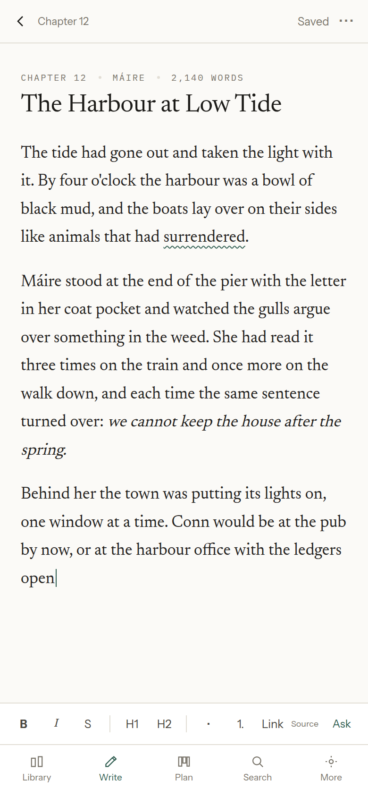

“Chapter 12 · Máire · 2,140 words” sits above the title, so the writer knows where they are without opening the tree.
The Markdown Source toggle and the AI drawer are one tap from the keyboard, at the end of the same row as bold and headings.
Library, Write, Plan, Search, More. Each has a word as well as an icon, with 44 px targets and safe-area padding.
Wavy underlines mark a word with variants; ghosting dims a passage without deleting it. The page stays a page.